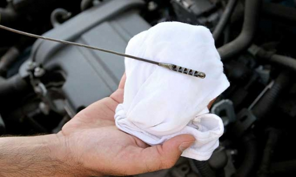
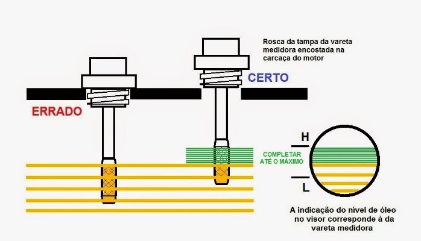

Nível do óleo do motor
Um investimento de um minuto pode manter seu carro saudável e funcionando sem problemas
Apesar de ser uma tarefa relativamente simples, conferir o nível do óleo em casa nem sempre é tão fácil.

A verificação do nível do óleo parece uma tarefa fácil quando o proprietário imagina que basta apenas retirar a vareta e verificar se o óleo esta em contato com ela e no nível correto.
Mas para realizar a medição de forma correta é necessário que o veículo esteja estacionado por cerca de 15 a 30 minutos, no mínimo, e com motor frio, ou seja, sem ter sido acionado recentemente.
Isso porque ao manter o motor desligado e frio e o carro estacionado você garante que o óleo esteja na temperatura correta de verificação, e seu nível não esteja alterado devido vibrações ou bombeamento do mesmo para lubrificação do motor.
Desta forma você garante que o óleo está ou não no nível certo.

Muitos dizem que devido a cor preta o óleo está estragado, porém a cor não indica a qualidade do óleo, a única maneira de verificar a qualidade é através de um equipamento que mede a quantidade de impurezas presente no óleo.